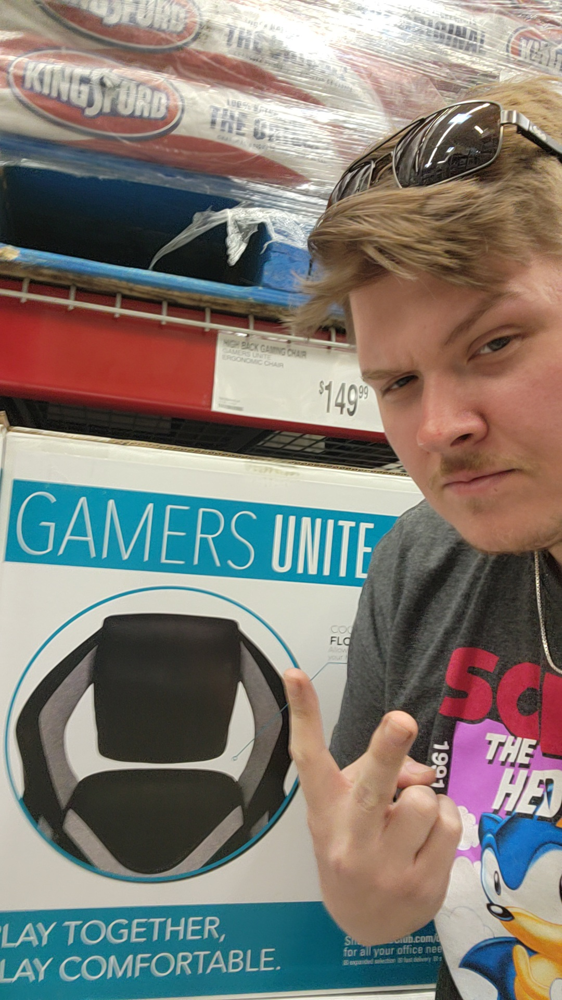

Garrett Hester
Author of the forthcoming dark fantasy novel Nadir.
Nadir is a gripping descent narrative that channels the gravitas of Greek tragedy through the stark, unflinching lens of modern grimdark.
Nadir explores themes of vengeance, self-destruction, and agency versus determinism with mythic heft and literary precision. Veyr is a world anchored by stone gods—the ontological pillars of existence. Each takes a Chosen: a mortal imbued with the power of their divine domain. At the center of the tale is Avander, a fallen prince who loses everything and would burn the world to restore the last gleaming star in his life.
The novel combines philosophical depth with visceral horror, marrying a recursive symbolic structure with clear, intentional prose and reverent subversion of genre tropes. Rather than obfuscation, Nadir seeks resonance through emotional honesty and psychological insight—a work written to be felt first, understood second, and remembered long afterward.
For readers who appreciate the mythic symbolism of Wolfe, the unflinching violence of McCarthy, the psychological intimacy of Muir, or the existential horror of Lostetter, Nadir offers a new descent.
Although Garrett has completed other manuscripts, Nadir will be his publishing debut.
Nadir is a gripping descent narrative that channels the gravitas of Greek tragedy through the stark, unflinching lens of modern grimdark.
Nadir explores themes of vengeance, self-destruction, and agency versus determinism with mythic heft and literary precision. Veyr is a world anchored by stone gods—the ontological pillars of existence. Each takes a Chosen: a mortal imbued with the power of their divine domain. At the center of the tale is Avander, a fallen prince who loses everything and would burn the world to restore the last gleaming star in his life.
The novel combines philosophical depth with visceral horror, marrying a recursive symbolic structure with clear, intentional prose and reverent subversion of genre tropes. Rather than obfuscation, Nadir seeks resonance through emotional honesty and psychological insight—a work written to be felt first, understood second, and remembered long afterward.
For readers who appreciate the mythic symbolism of Wolfe, the unflinching violence of McCarthy, the psychological intimacy of Muir, or the existential horror of Lostetter, Nadir offers a new descent.
Although Garrett has completed other manuscripts, Nadir will be his publishing debut.
Connect with the Author